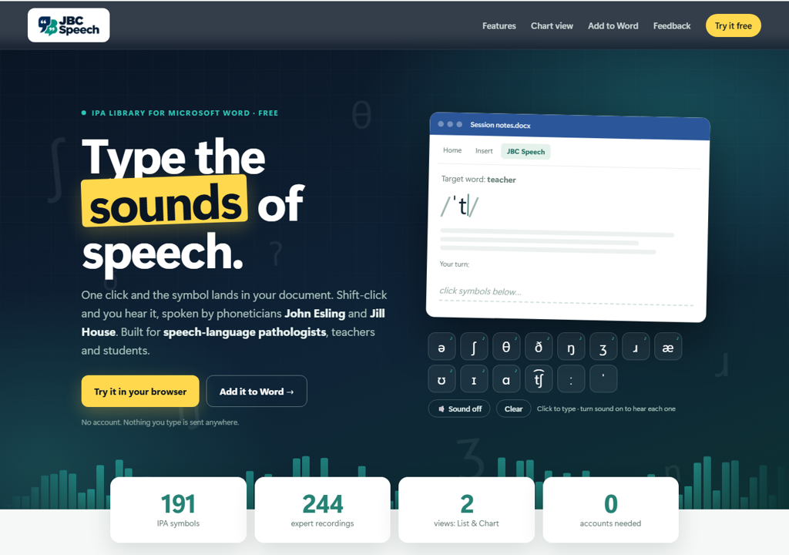

A bold landing page for SLPs, teachers and students, with a live transcription demo that plays the real recordings. Feedback goes to GitHub issues. 27 Nov 2026.

System fonts only, with no trackers. Animations switch off for visitors who've set their system to reduce motion. On phones the nav shrinks to the Install button.
The feedback.html page warns people not to include client or patient information, because issues are public. GitHub needs a free account.
48e67fd). If it's ever revisited, the Cloudflare build must use worker/ as its root directory.